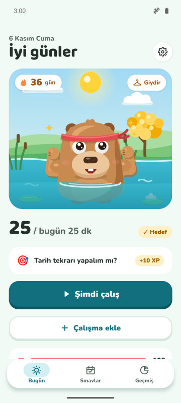
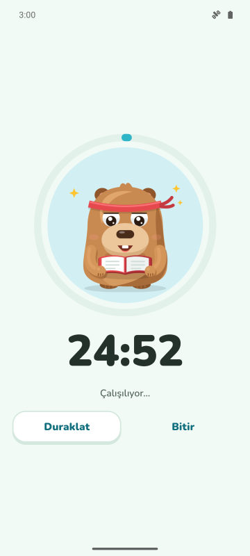
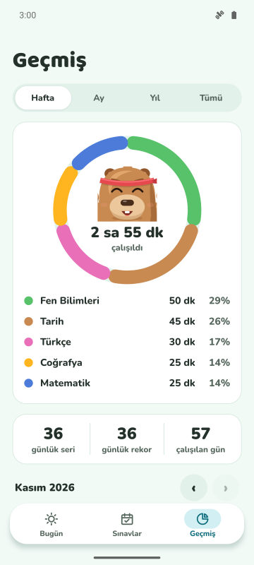
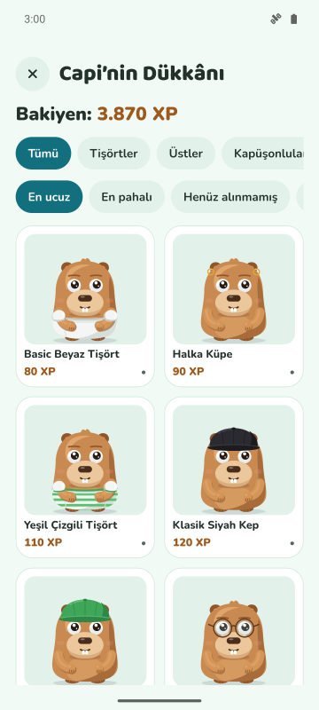

Günlük hedef ve seri
Günde kaç dakika çalışacağını seç. Hedefe ulaşınca serin artar, kapibaran kutlama yapar.
Odak sayacı, günlük seri ve sınav geri sayımı. Ne kadar çok çalışırsan kapibaran o kadar mutlu ve güçlü olur.
Yakında Google Play'de
Android için ücretsiz. iPhone daha sonra.

Günde kaç dakika çalışacağını seç. Hedefe ulaşınca serin artar, kapibaran kutlama yapar.
Üç modlu bir sayaç. Korumalı Modda kapibara, uzak durmak istediğin uygulamaların üstünde belirir.
Sınavını ekle, kalan günleri gör. Her gün en çok ilgi isteyen dersle bir görev gelir.
Çalışarak XP kazan, kıyafet ve aksesuarla değiştir. Özel günler ve doğum günün de kutlanır.



Evet. Uygulama reklamlı ve ücretsizdir. Premium (isteğe bağlı) reklamları kaldırır; Korumalı Mod, odaklanırken sessiz bildirimler ve ayda 3 seri kalkanı sunar.
Hayır. Verilerin telefonunda kalır. İstersen kendi Google Drive'ınla eşitleyebilirsin.
Evet. Sınav tarihini ekle, geri sayımı takip et ve 7, 3 ve 1 gün önce hatırlatma al.
Forest'ta ağaç dikersin. CapyFoco'da çalıştıkça büyüyen bir kapibaraya bakarsın; günlük seri, hedefler ve sınav geri sayımı tek uygulamada.
Şimdilik sadece Android. iPhone sürümü planlanıyor.